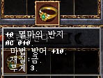
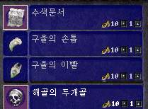
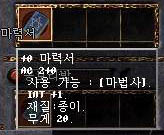
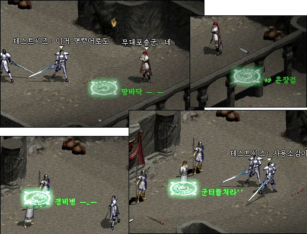

|
2002年8月17日
Lineage II更多資料
來源：Lineage Playforum
英文翻譯：Lineage Compendium
Lineage Playforum公佈了他們和Lineage II制作者的訪問（上回的是Part 2的搞要，今次是Part 1）：
1. 他們預計非公開測試大約可以容納一萬人，伺服器資料不會保留，其後會有公開測試，而且在完結後資料是會保留的。
2. 很多玩家都擔心會Lag，他們說網路引擎和現在天堂所使用的差不多，現在1,000人的攻擊場面所使用的網路資源，相當於Lineage II中的800人，他們非常注重攻城時的流暢度。
3. 他們亦重視圖像的細緻度，它們已有Alpha頻道（半透明效果），因此應該非常漂亮，現在圖像方圖已經完成，因為制作速度應該會加快。
4. 勇水和綠水亦會出現在遊戲中，同時亦不會有現在的拳頭攻擊，但取而代之為像抬拳道一樣的功夫。你會發覺很多Lineage II的道具都和Lineage的相同，價錢還一樣呢！當然亦會有新道具。另外，道具不會再有職業限制。
5. 他們非常注重Lv1的新角色使用極強的道具而在短時間中提升至Lv45的不公平問題，在Lineage II中，為提高玩家對角色的緊貼度，他們將會制定新規則去解決此問題，例如等級弱的角色即使有強的道具亦不會太易提升等級。
6. Lineage II沒有特定的王族職業，任何職業只要他肯努力維持自己的血盟都可以做王族。
7. Lineage II共有五個種族：人類，精靈（妖精），黑暗精靈，半獸人（妖魔），侏儒。
8. Lineage II會有等級和技能，你在可專注於某一技能，因此即使大家的等級一樣，你在某方面可能會較優勝。
遺忘之島的戒指
來源：Lineage Playforum
英文翻譯：Lineage Compendium

遺忘之島的食人妖精會掉下新戒指（抗魔戒指），此戒指會加10%魔防。
另外，部分遺忘之島的怪物是看不見隱身的玩家，對於擁有隱斗的玩家這是一大喜訊。
法師新任務資料
來源：Jude1004.com
英文翻譯：Lineage Compendium
 
該任務所需的物品應為食屍鬼指甲，食屍鬼尖牙及骷髏頭，那些道具會間中掉下，並能以10金幣的售價賣給商店（包括接受任務時所得到的搜尋之證）。
任務的獎品魔法書可以作盾版使用，安定值是4，-2防及+1智。究竟使用精盾多2防，還是使用魔法書多1智較好呢？這個當然要由你決定。
王族魔法正確目標額外功能
來源：Lineage Playforum
英文翻譯：Lineage Compendium

Lineage Playforum報導了王族魔法正確目標(True Target)的額外標籤功能，如果你先在說話欄鍵入一此字，但不要按Enter，然後才使用正確目標的話，在魔法效果的旁邊使會顯示那些字了，這樣血盟成員便更能明白目標是甚麼。
另外，Lineage Playforum在文中亦提及，在說話之島洞穴2/F通往巴風特的房間中的怪物由夏洛伯改為楊果里恩。
仙境傳說(RO)擊倒天堂(Lineage)成為台灣最人氣遊戲
仙境傳說(RO)在8月10日正式推出後，好評如潮，其可愛的2D Q版人物和實質3D境景的配合，良善的遊戲系統設定，多變的角色路線，與及清楚嚴謹的遊戲規則吸納了不少年青以及享受線上遊戲的玩家，根據台灣主要網路遊戲討區板遊戲基地和巴哈姆特的週間人氣顯示，仙境傳說已經取代天堂成為最多人討論的遊戲！ |